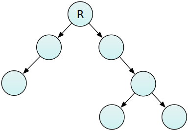
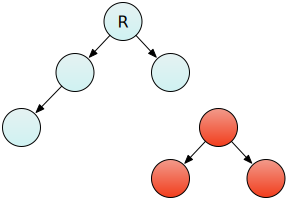
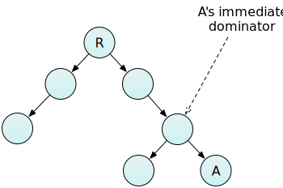
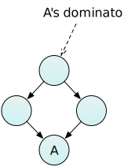

This article provides an introduction to the concepts of Reachability, Shallow versus Retained size, and Dominators, as they apply in garbage-collected languages like JavaScript.
These concepts matter in memory analysis, because often an object may itself be small, but may hold references to other much larger objects, and by doing this will prevent the garbage collector from freeing that extra memory.
You can see the dominators in a page using the Dominators view in the Memory tool.
With a garbage-collected language, like JavaScript, the programmer doesn't generally have to worry about deallocating memory. They can just create and use objects, and when the objects are no longer needed, the runtime takes care of cleaning up, and frees the memory the objects occupied.
In modern JavaScript implementations, the runtime decides whether an object is no longer needed based on reachability. In this system the heap is represented as one or more graphs. Each node in the graph represents an object, and each connection between nodes (edge) represents a reference from one object to another. The graph starts at a root node, indicated in these diagrams with "R".

During garbage collection, the runtime traverses the graph, starting at the root, and marks every object it finds. Any objects it doesn't find are unreachable, and can be deallocated.
So when an object becomes unreachable (for example, because it is only referenced by a single local variable which goes out of scope) then any objects it references also become unreachable, as long as no other objects reference them:

Conversely, this means that objects are kept alive as long as some other reachable object is holding a reference to them.
This gives rise to a distinction between two ways to look at the size of an object:
Often, objects will have a small shallow size but a much larger retained size, through the references they contain to other objects. Retained size is an important concept in analyzing memory usage, because it answers the question "if this object ceases to exist, what's the total amount of memory freed?".
A related concept is that of the dominator. Node B is said to dominate node A if every path from the root to A passes through B:
If any of node A's dominators are freed, then node A itself becomes eligible for garbage collection.

One slight subtlety here is that if an object A is referenced by two other objects B and C, then neither object is its dominator, because you could remove either B or C from the graph, and A would still be retained by its other referrer. Instead, the immediate dominator of A would be its first common ancestor:
